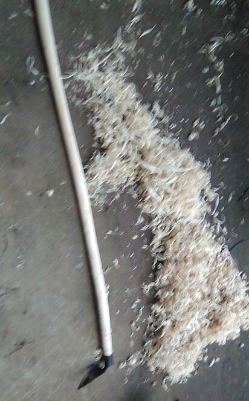
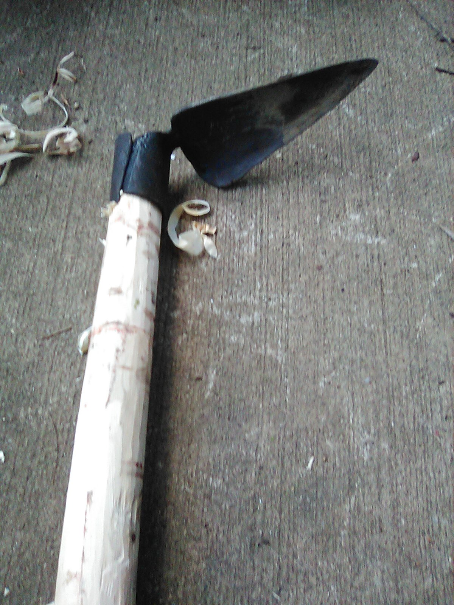
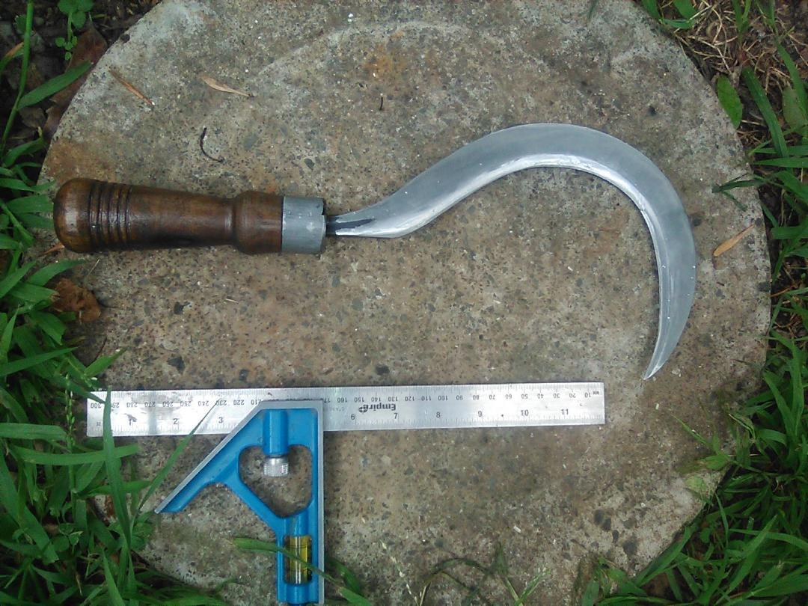
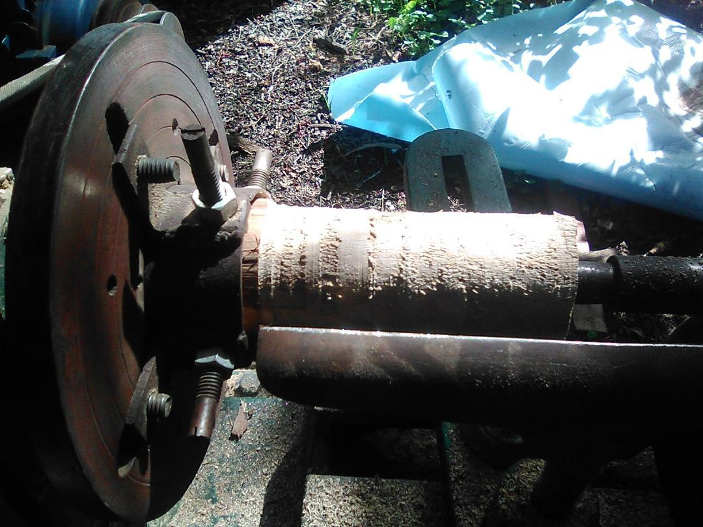
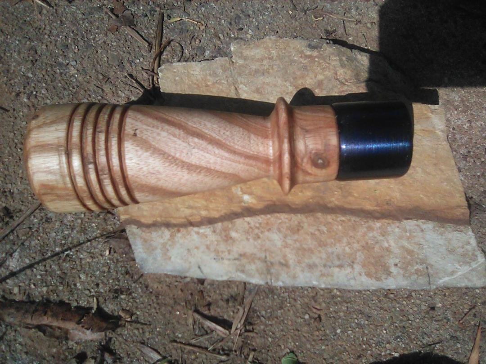
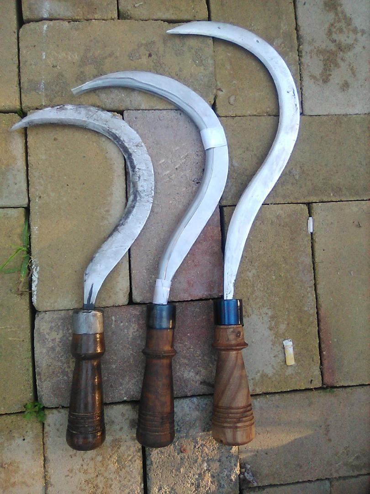

Gardening, like most practical work, is shaped by terrain, soil, water, and climate. In that sense, it is as much about strategy as it is about effort.
In Canberra, the soil is typically a decomposed granitic clay - dry, compacted, and not naturally conducive to strong yields.
What follows is a practical account of attempts to improve that situation using available materials, incremental changes, and a preference for reuse where possible.
There was no `digging the garden' when I set about converting parts of my back `lawn' into a vegetable garden. A heavy crowbar was used to break the surface of the hard-baked, clay soil. Gypsum was dispersed over the disrupted surface and it was watered. Two days later, the same was repeated. Privet, a noxious species that grows around my yard, was ground in a mulcher and piled, with leaf-matter from various Quercus species, on the prepared soil.
Carp are a noxious introduced species that were introduced into Australian water-ways. My sons and I occasionally fish. In accordance with local regulations, the carp are not returned, nor left on the bank, but are, instead, processed into a soil conditioner that accelerates decomposition of the privet and yields a high organic content, nitrogen rich soil. Comfrey (Symphytum officinale) is also used to hasten decomposition of compost and weed suppression.
Tools occasionally break, or wear out. Some tools are no longer readily available, and if they are, they're not quite suited. I've had occasion where it has been necessary to repair or to manufacture tools from salvaged material. This is discussed in detail in the section on forges but three items stand out:
Some time ago I needed to get rid of a couple of mattresses. One often sees discarded mattresses lying around Canberra, cluttering the footpath and it is presumably a combination of cost of disposal and not having the means to transport the discarded object to a suitable resource management centre.
I solved the problem of disposal by stripping the fabric components from the mattress. Coconut fibre was composted. The steel-spring support and frame, held 'twixt two star posts, and secured with tie-wire form a ready support for climbing plants like beans and cucumbers. Synthetic material was used for temporary weed-suppression and water retention as an unexpected bonus.
I often make stakes and supporting frames from privet, as well. The branches tend to be long, flexible, and straight. They can be woven or tied into more complex, temporary structures. Ivy is an absolute curse but it can be stripped of leaves and bark, beaten, and twisted or plaited into makeshift string. Using these materials, I constructed support structures for vines, about two years ago, and they're still standing.

Improved soil with Cucumber and Taraxacum officinale.

Improved Garden bed with chillis, capsicum, Jerusalem artichoke, silver beet and tomatoes.

Same garden bed, later in season, and with a pumpkin encroaching.

Papa Meilland - Turkish Delight on a thorny bush!

Trellis made from star-posts, tie wire and mattress springs.

A hoe forged from leaf spring; handle cut from green ash using a draw-knife (also made in-house).

Completed hoe.

A sickle forged from leaf spring; handle turned from green ash.

A garden fork met its demise and consequently had a new handle made.

Layout of pattern for new handle.

Repaired fork.

A new sickle to replace the one stolen..

A new handle: green ash, reeady to turn.

Completed handle.

A tri-sickle? Iterative improvements in design.